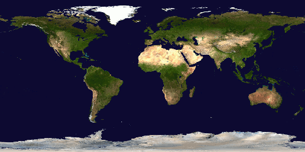

| ... |
The API Explorer is a built-in testing tool that allows you to interact directly with Stellarium's HTTP API without writing any code. Every service and operation available through the Remote Control plugin is listed here and can be tested with a single click.
This is the same API that powers the entire Remote Control interface. By exploring it here, you can understand how each panel communicates with Stellarium and learn to build your own integrations, scripts, or external applications.
Combine the API Explorer with the Code Generator tab. Once you find the right API operation and parameters here, switch to the Code Generator to produce ready-to-use code in cURL, Python, JavaScript, or Stellarium Script format. You can then insert that code directly into the Script Editor for further customization.

'/> '/>
0")?>